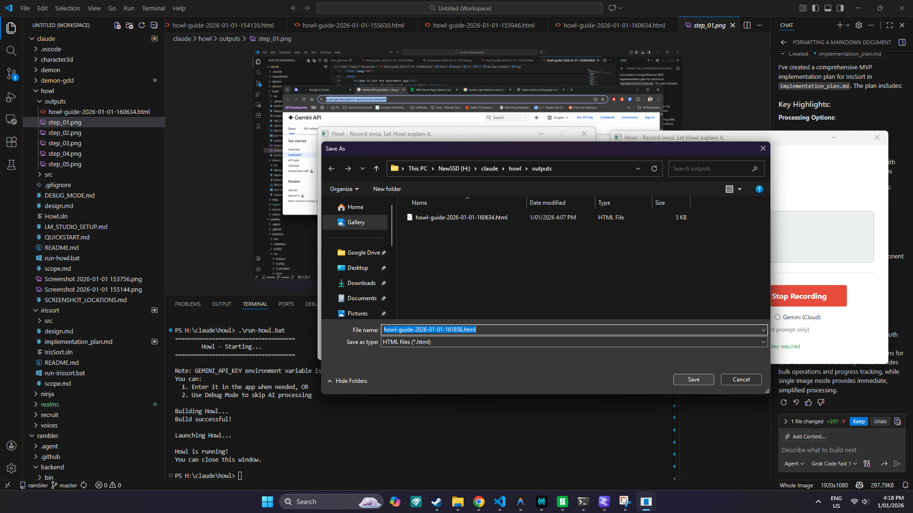
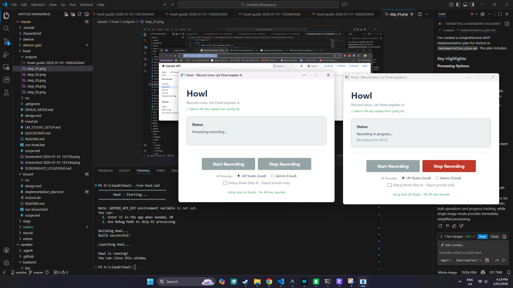
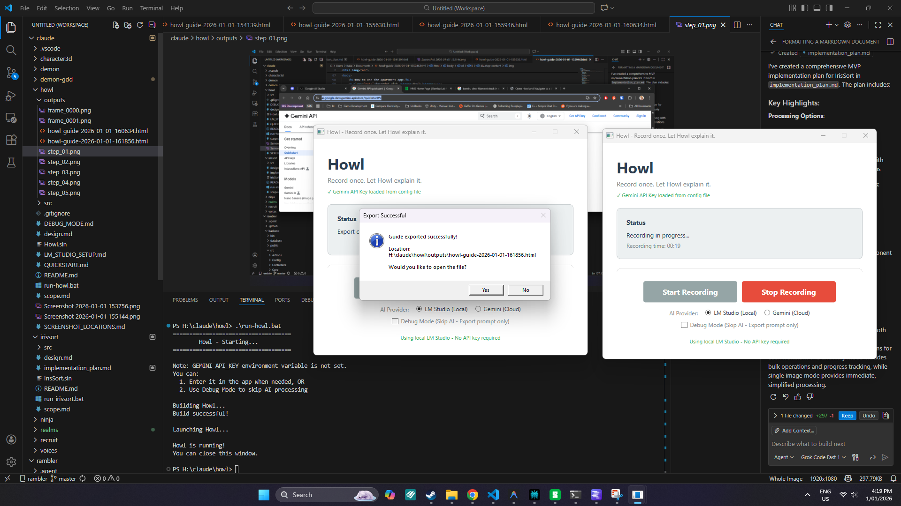
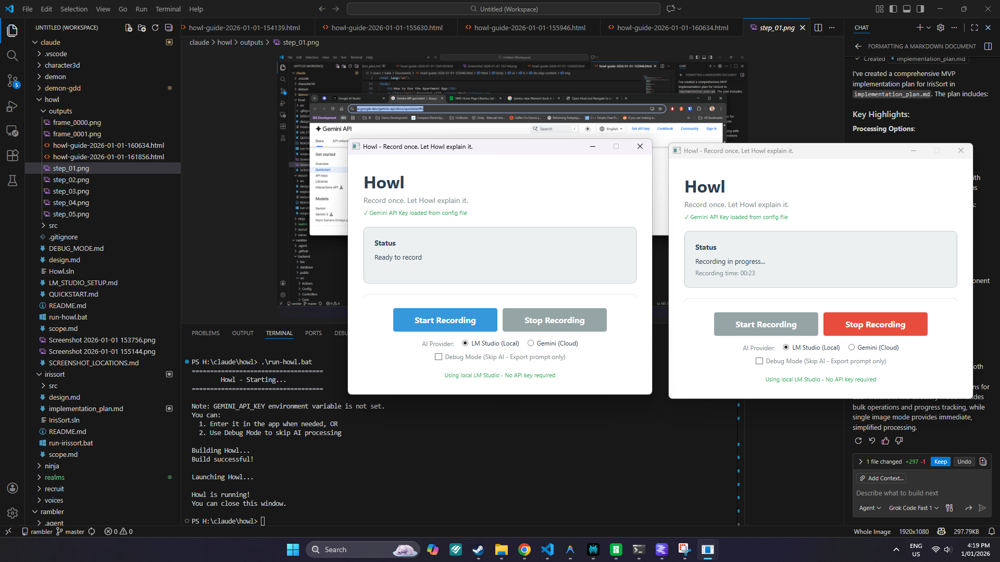
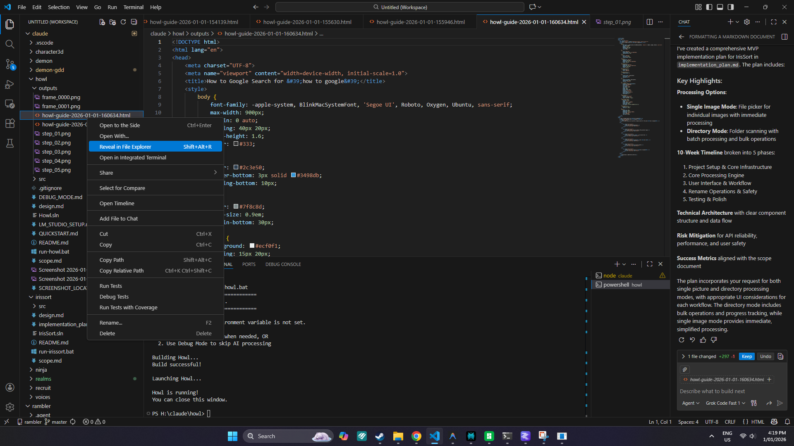
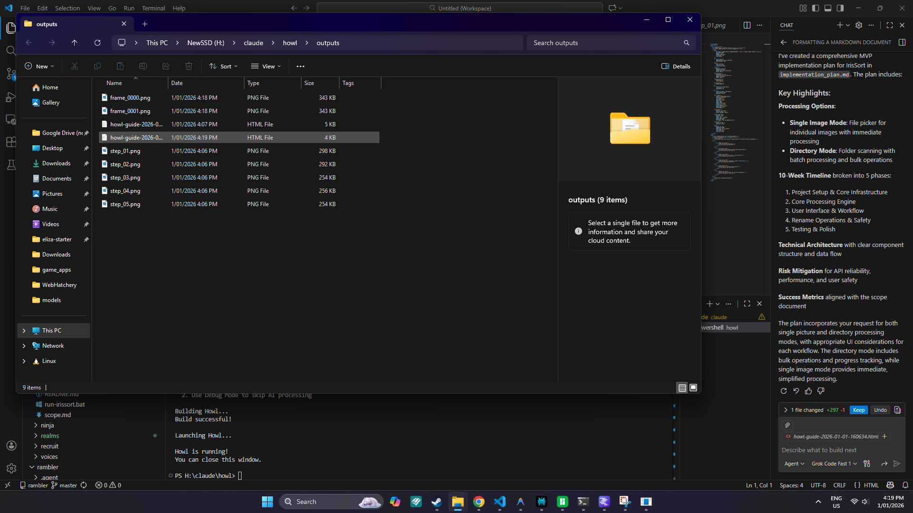
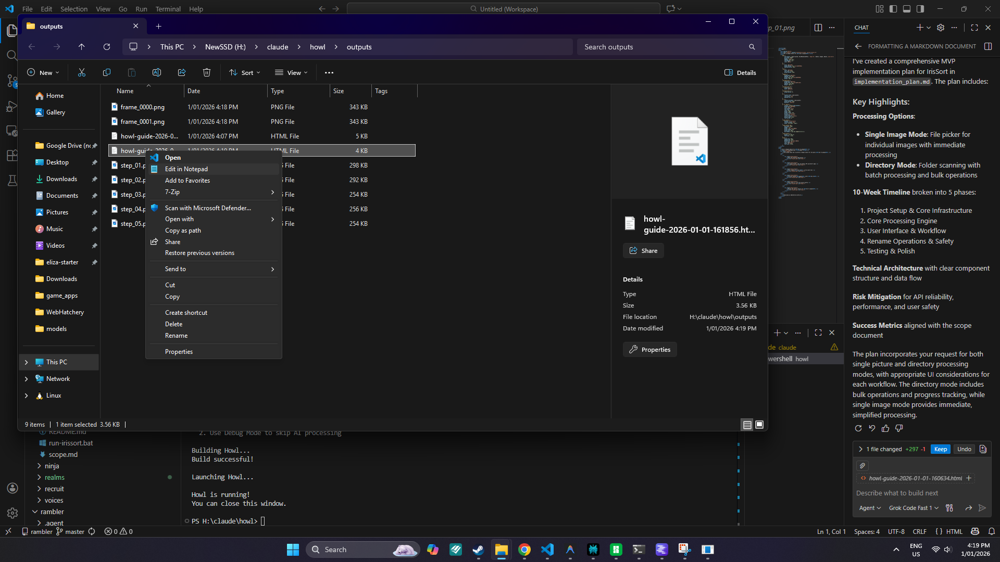
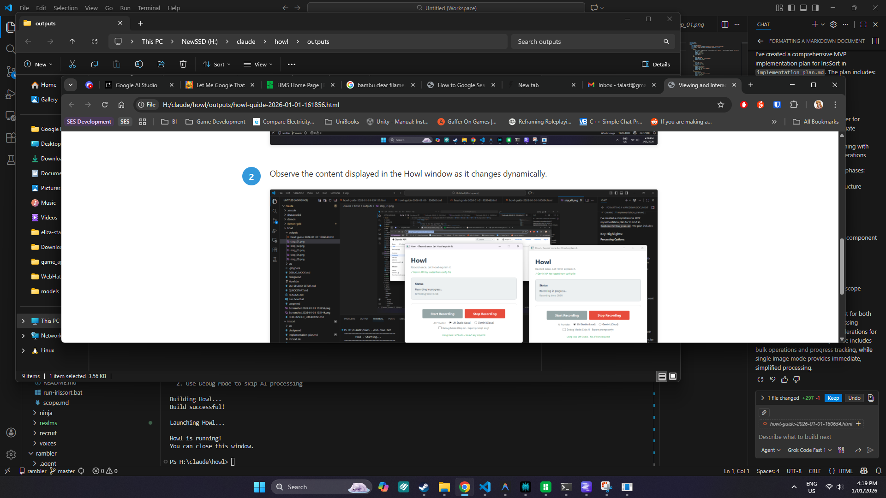

Initiate the process of exporting a recording.

Confirm the export action to generate the HTML file.

Specify the location and filename for saving the exported HTML file.
Complete the export process to create the HTML file.
Verify that the export was successful and the HTML file is ready.

Open Visual Studio Code to view the contents of the generated HTML file.
Navigate to the location where the exported HTML file was saved.
Open the exported HTML file in Visual Studio Code to view the instructions.
Locate the folder containing the exported HTML file using File Explorer.
Open the HTML file in a web browser to view the instructions online.
Review the generated instructions in the HTML file to ensure accuracy and completeness.
Return to the Howl application to continue working on additional recordings or tasks.